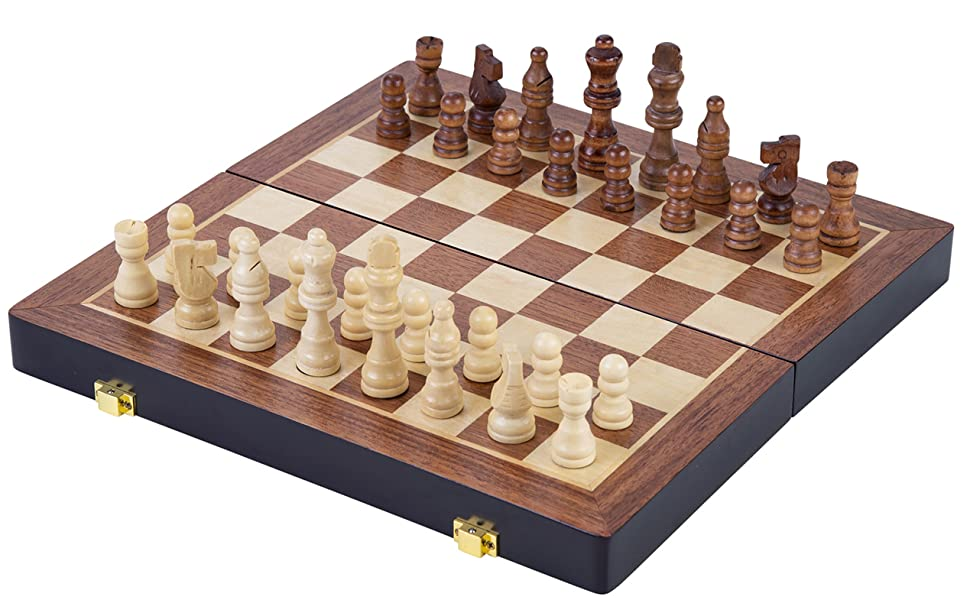
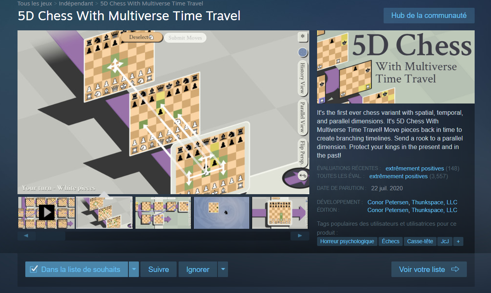

Le mahjong est un jeu de société asiatique possédant différentes variantes, les gens connaisant le jeu en solitaire où il faut trouver des paires ici je parlerai de sa version à 4 joueurs où le but est de gagner des points en réalisant des mains.
Qu'est ce le riichi mahjong ?
Je vais vous parlez de sa ariante japonaise, le riichi mahjong. Ce jeu est composé de 136 tuiles. Chaque tuile est en 4 exemplaires, appartenant chacun à une famille en particulier. En effet, il existe 4 familles les honneurs, les caractères, les bambous et les cercles. Le but est de faire évoluer sa main de 13 tuiles en piochant des tuiles et en jetant une autre pour garder 13 tuiles dans sa main. Le but est de réunir une main gagnante d'une combinaison de 14 tuiles, la 14ème tuile peut être récupérer soit par la pioche soit par la défausse d'un autre joueur.
Finale du tournoi Majsoul Team Championship - Jour 1
Echecs
Un jeu de société connu mondialement, les échecs un jeu de stratégie où le but est de piéger le roi adverse à l'aide des différentes pièces à sa disposition. Je ne joue pas de façon compétitif au échecs, j'essaie plus de passer un bon temps avec mes amis qu'on j'y joue.

Les variantes
Ce jeu connu possède différentes variantes, ici je vais vous en parler de deux variantes.
La première est un jeu sur pc qui donne une nouvelle dimension au échecs qui est le temps, les pièces possèdent donc la possibilités de voyager dans le temps, n'ayant pas vraiment jouer au jeu la seule chose que je peux vous dire est que cet nouvel aspect rends le jeu encore plus complexe et même sans comprendre grand chose. Le simple fait de rajouter un voyage dans le temps rends ce jeu assez amusant à voir. Ce jeu se nomme 5D Chess.

Le second est les échecs avec des régiments, dans un aspect plus militaire du jeu avec plusieurs rois et des régiments à contrôler ceci donne des parties impressionnantes à voir. Voici donc une video pour vous montrer les règles et une démonstration d'une partie pour illustrer mes propos :
Basket-ball
Un loisir plus qu'un sport que je pratique sérieusement. Je me réunais avec mes amis chaque week-end pour faire une séance de basket matinal, cependant cela doit faire bientôt un an que je ne l'ai plus fait. Mais ceci ne m'empêche pas de toujours apprécier ce sport de balle.
Qu'est ce le basket ?
Le basket est un jeu de balle dont on ne peut manipuler la balle avec ses mains en le faisant rebondir au sol pour se mouvoir. Le but est de marquer des points en rentrant la balle dans un panier en hauteur.